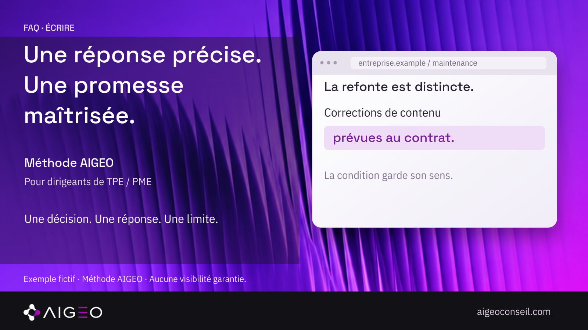

« Est-ce que la maintenance comprend une refonte ? » Cette question paraît simple. Une réponse comme « nous vous accompagnons de A à Z » peut pourtant laisser le lecteur imaginer des prestations très différentes. Une FAQ utile doit permettre de distinguer ces possibilités.
Chez AIGEO, nous proposons un travail en trois gestes : répondre directement, préciser le périmètre et conserver la condition qui change le sens. Pour l’illustrer, cet article utilise une entreprise de maintenance de site entièrement fictive. Aucune offre réelle, prestation client ou amélioration de performance n’est revendiquée.
Choisir une question qui appelle une décision
La question doit correspondre au choix du lecteur. « Parlez-nous de votre expertise » invite à présenter l’entreprise. « La refonte est-elle incluse dans la maintenance ? » permet de décider si le service convient au besoin.
Dans votre activité, prenez une question confirmée par des échanges disponibles, ou notez qu’il s’agit d’une hypothèse. Vérifiez également les mots utilisés par l’offre : maintenance, refonte et correction peuvent recouvrir des tâches différentes. La rédaction ne doit pas résoudre seule une ambiguïté commerciale que l’entreprise n’a pas encore tranchée.
Répondre avant de présenter ses qualités
Dans notre scène fictive, la réponse commence par : « Non, la refonte n’est pas incluse. » Elle apporte immédiatement l’information nécessaire. La suite peut expliquer ce que comprend la maintenance, plutôt que repousser cette précision après une présentation générale.
Une réponse directe n’est pas obligatoirement négative. Elle peut confirmer une inclusion, annoncer une condition ou indiquer que le périmètre doit être établi. L’essentiel est de ne pas masquer l’incertitude derrière une expression rassurante. Si le fait n’est pas confirmé, gardez-le ouvert et désignez la vérification nécessaire.
Décrire ce qui est compris
Notre exemple précise ensuite : « La maintenance couvre les corrections de contenu prévues au contrat. » Cette phrase nomme une famille de tâches tout en conservant leur limite. Elle ne signifie pas que toutes les corrections imaginables sont incluses.
Pour une offre réelle, le niveau de précision dépend de ce qui est effectivement défini. On peut distinguer les tâches, les livrables, les exclusions ou les informations à fournir. Évitez d’ajouter un délai, un prix ou une disponibilité simplement pour rendre la réponse plus convaincante. Une précision non vérifiée serait une nouvelle promesse, pas une clarification.

Garder la condition près de la réponse
La condition « prévues au contrat » modifie le périmètre. Elle doit rester près de l’information qu’elle limite. Si elle disparaît de la FAQ mais figure dans le devis, les deux documents peuvent donner des lectures différentes de la même offre.
La réponse complète de notre exemple fictif devient : « Non, la refonte n’est pas incluse. La maintenance couvre les corrections de contenu prévues au contrat. Une refonte demande un périmètre séparé. » Le lecteur sait ce qui est exclu et ce qui nécessite un échange. Cette formulation sert l’explication ; elle ne remplace pas les documents applicables à votre activité.
Faire une relecture de cohérence
Comparez cette réponse à la page de service et au document qui définit la prestation. Vérifiez le même nom, les mêmes inclusions et les mêmes conditions. Si l’un des documents est ancien, identifiez la version qui fait autorité avant de recopier son contenu.
Vous pouvez ensuite demander à un lecteur extérieur de reformuler ce qu’il croit pouvoir demander. Ce contrôle de compréhension est une proposition AIGEO. Il ne mesure pas une conversion et ne démontre pas qu’une IA reprendra la réponse. Son intérêt est de rendre visible ce que le texte laisse encore deviner.
Ce que la documentation Google permet de dire
Google conseille de produire des contenus utiles à une audience réelle. Pour les fonctionnalités IA de sa recherche, les bonnes pratiques SEO restent pertinentes ; les informations importantes doivent être disponibles sous forme textuelle. Notre grille de rédaction s’inscrit dans une recherche de clarté, sans constituer une exigence particulière de Google.
Une réponse précise ne garantit pas sa diffusion, sa citation ou un classement. Nous conservons cette limite pour éviter de transformer une méthode éditoriale en promesse technique. Le résultat observable à ce stade est le texte réécrit, pas une performance supposée.
Choisissez une réponse vague de votre FAQ. Écrivez d’abord le fait confirmé, puis le périmètre, puis la condition indispensable. Pour découvrir notre approche, rendez-vous sur aigeoconseil.com.
Sources consultées le 10 octobre 2026 : contenus utiles de Google Search Central et fonctionnalités IA de la recherche Google.
Sources consultées
- Google Search Central — Contenus utiles, fiables et people-first · vérifiée le 2026-10-10T17:14:03.624Z
- Google Search Central — Fonctionnalités IA et votre site web · vérifiée le 2026-10-10T17:14:03.624Z